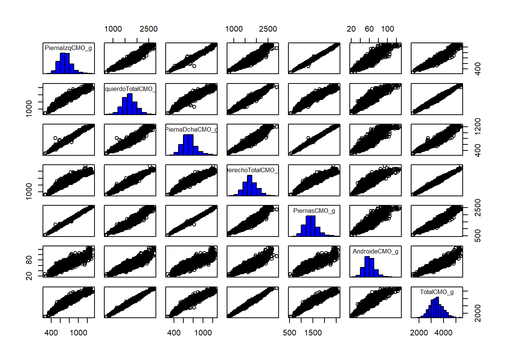
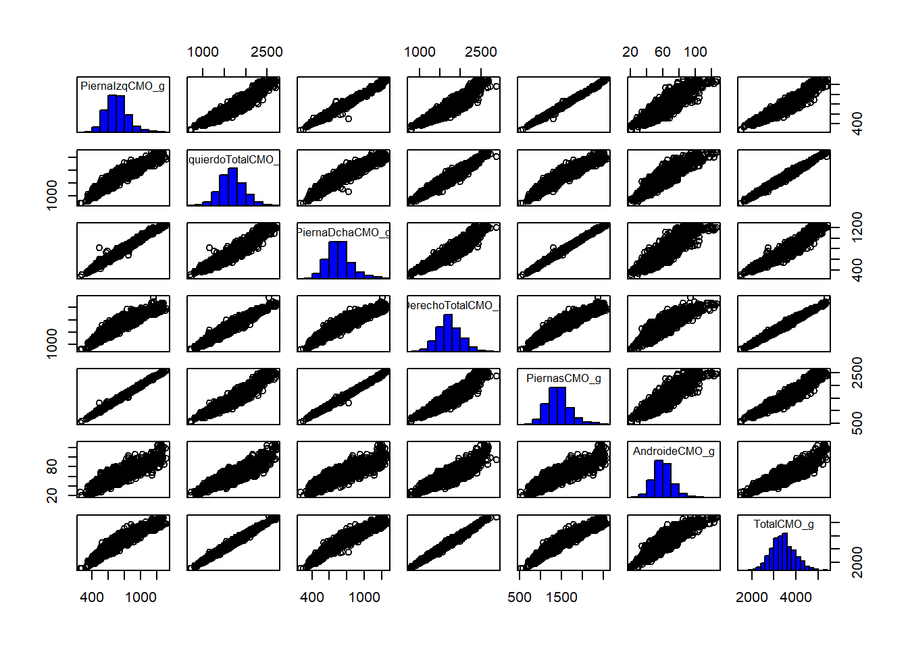

Capítol 4 Descriptiva
4.1 Visió general
Visualitzem de nou el resum d’estadistiques descriptives univariants un cop tractats els valors atípics i faltants.
Descriptive Statistics
dfpredensi
N: 5922
Mean Std.Dev Min Median Max N.Valid Pct.Valid
-------------------------------- --------- --------- --------- --------- --------- --------- -----------
AndroideCMO_g 60.36 12.49 20.30 59.60 127.00 5922.00 100.00
AndroideGrasa_g 511.78 303.87 117.00 427.00 1818.00 5922.00 100.00
AndroideMagro_g 3508.07 618.88 1762.00 3471.00 6026.00 5922.00 100.00
AndroideMasaTotal_kfg 4.09 0.80 2.02 3.99 8.00 5922.00 100.00
AndroideRegión_percentatge 12.24 5.78 4.00 10.80 40.60 5922.00 100.00
AndroideTejido_g 4026.22 791.51 1986.00 3914.50 7960.00 5922.00 100.00Descriptive Statistics
dfpreeco
N: 6089
Mean Std.Dev Min Median Max N.Valid Pct.Valid
------------------------ --------- --------- --------- --------- --------- --------- -----------
Any 2018.51 2.52 2014.00 2018.00 2023.00 6089.00 100.00
Auricula_esq 32.54 5.25 17.00 33.00 51.00 6089.00 100.00
Auricula_esq_i 20.07 3.36 5.19 19.54 36.41 6089.00 100.00
Diam_aorta 27.14 4.26 15.00 27.00 43.00 6089.00 100.00
Diam_aorta_i 16.72 2.53 7.32 16.27 34.56 6089.00 100.00
Diam_ven_esq_diast 48.11 6.10 28.00 48.00 69.00 6089.00 100.00I les gràfiques de densitat i boxplots de les variables per densitometries:
suffixes <- c("Tejido_percentatge", "Región_percentatge", "Tejido_g", "Grasa_g", "Magro_g", "CMO_g", "kfg")
densityplots <- lapply(suffixes, function(suffix) {
data_long <- dfpredensi %>% dplyr::select(ends_with(suffix))%>% gather()
ggplot(data = data_long, aes(x = value)) +
facet_wrap(~ key, scales = "free", ncol = 5) +
geom_density() +
theme(axis.text.x = element_text(angle = 45, size = 7)) +
theme(strip.text.x = element_text(hjust = 0.1, size = 6))
})
boxplotecocardio1<-dfpreeco %>%
keep(is.numeric) %>%
gather() %>%
ggplot(aes(value)) +
facet_wrap(~ key, scales = "free", ncol = 4) +
geom_boxplot() +
theme(axis.text.x = element_text(angle = 40))
boxplots <- lapply(suffixes, function(suffix) {
df.m <- melt(dfpredensi %>% dplyr::select(ends_with(suffix)))
ggplot(data = df.m, aes(y = value)) +
geom_boxplot(dir= "h") +
facet_wrap(~ variable, scales = "free", ncol = 4) +
theme(strip.text.x = element_text(hjust = 0.1, size = 6), strip.text.y = element_text(hjust = 0.1, size = 6))
})
boxplots[[1]]
Figure 4.1: boxplot Tejido_percentatge
[[2]]
Figure 4.2: boxplot Región_percentatge
[[3]]Figure 4.3: boxplot Tejido_g
[[4]]Figure 4.4: boxplot Grasa_g
[[5]]Figure 4.5: boxplot Magro_g
[[6]]Figure 4.6: boxplot CMO_g
[[7]]Figure 4.7: boxplot kfg
[[1]]Figure 4.8: densitat Tejido_percentatge
[[2]]Figure 4.9: densitat Región_percentatge
[[3]]Figure 4.10: densitat Tejido_g
[[4]]Figure 4.11: densitat Grasa_g
[[5]]Figure 4.12: densitat Magro_g
[[6]]Figure 4.13: densitat CMO_g
[[7]]Figure 4.14: densitat kfg
I per ecocardiogrames:
densityplotecocardio2 <- dfpreeco %>%
keep(is.numeric) %>%
gather() %>%
ggplot(aes(value)) +
facet_wrap(~ key, scales = "free", ncol = 4) +
geom_density() +
theme(axis.text.x = element_text(angle = 40))
boxplotecocardio2 <-dfpreeco %>%
keep(is.numeric) %>%
gather() %>%
ggplot(aes(value)) +
facet_wrap(~ key, scales = "free", ncol = 4) +
geom_boxplot() +
theme(axis.text.x = element_text(angle = 40))
densityplotecocardio2
Figure 4.15: density plot ecocardiograma

Figure 4.16: density plot ecocardiograma
pp <- lapply(names(dfpreeco %>% keep(is.numeric) %>% dplyr::select(-row, -Any)), function(var) {
ggplot(dfpreeco, aes(x = .data[[var]], color = Sexe)) +
geom_histogram(aes(y = ..density..), alpha = 0.5, position = "identity", show.legend = FALSE) +
geom_density(alpha = .2, , show.legend = FALSE) +
theme(axis.text.x = element_text(angle = 40),
axis.title.x = element_text(size = 6),
axis.title.y = element_blank())
})
plot_grid(plotlist = pp, ncol = 3, ggtitle = "Density plot Sex")Figure 4.17: density plot ecocardiograma
Podem notar la diferencia un cop tractats els valors.
Matrius de gràfics de dispersió:
Per cada base de dades tenim p variables cada una de les quals que podem representar una per una amb un diagrama de caixes o histograma i dos a dos amb un diagrama de dispersió. Per tant, tindrem p(p-1)/2 diagrames possibles.
La millor forma de grafiar-los és en forma de matriu, la matriu de gràfics de dispersió, on representarem els histogrames i les relacions bivariants. Ens ajudarà a entendre el tipus de relació que existeix entre pars de variables i identificar punts atípics en la relació bivariant.
En particular, aquests gràfics són importants per apreciar si existeixen relacions no lineals, en aquest cas la matriu de covariància podria no ser un bon resum de dependència entre les variables.
Com que tenim moltes varialbes, les agruparem per categories per visualitzar la matriu de dispersió millor per cada grup.
DUBTE: Haurem de fer transformacions no lineals? (capitol 4.4 llibre analisis de datos multivariantes): No podem asegurar que les nostres variables estiguin relacionades de forma lineal entre elles (poden estar-ho d’altres formes), es en aquests casos que apliquem transformacions a les variables matrius de grafics de dispersio despres de les transformacions no lineals. Fixemnos que per utilitzar més endevant PCA tmb necessitarem que les variables estiguin relacionades de forma lineal.
Matriu de varianzas i covarianzas: la covarianza es una medida descriptiva de la relació LINEAL entre cada par de variables continuas. Si les nostres variables estan relacionades, pero no linealment, la covarianza no sera prou presisa, llavors hem de fer les transformacions.
OBS: Les matrius de grafics de dispersio ens ajuden a identificar en quines variables no tenim una relacio lineal.
panel.hist <- function(x, ...) {
usr <- par("usr"); on.exit(par(usr))
par(usr = c(usr[1:2], 0, 1.5) )
h <- hist(x, plot = FALSE)
breaks <- h$breaks; nB <- length(breaks)
y <- h$counts; y <- y/max(y)
rect(breaks[-nB], 0, breaks[-1], y, col="blue", hjust = 0, size = 5, ...)}
map(suffixes, ~ {
selected_names <- dfpredensi %>% dplyr::select(ends_with(.x)) %>% names()
half_names <- split(selected_names, rep(1:2, length(selected_names)/2))
df_suffix1 <- dfpredensi %>% dplyr::select(all_of(half_names[[1]]))
df_suffix2 <- dfpredensi %>% dplyr::select(all_of(half_names[[2]]))
pairs(df_suffix1, diag.panel = panel.hist)
pairs(df_suffix2, diag.panel = panel.hist)
}) 

[[1]]
NULL
[[2]]
NULL
[[3]]
NULL
[[4]]
NULL
[[5]]
NULL
[[6]]
NULL
[[7]]
NULLn <-names(dfpreeco %>% keep(is.numeric) %>% dplyr::select(-row))
half_names<- split(n, rep(1:2, length(n)/2))
df_suffix1 <- dfpreeco %>% dplyr::select(all_of(half_names[[1]]))
df_suffix2 <- dfpreeco %>% dplyr::select(all_of(half_names[[2]]))
pairs(df_suffix1, diag.panel = panel.hist)Figure 4.18: Matriu gràfics de dispersió ecocardiograma gruix
Figure 4.19: Matriu gràfics de dispersió ecocardiograma diametres
4.2 Descriptiva de les variables de densitometria/ecocardiogramas per sexe, esport, any i edat
Ara anem a descriure les variables de densitometria per sexe, seccio, any i edad (per tercils).
Començarem amb les variables mesurades en grams (es faria d’igual forma per kg i %Grassa) per sexe.
df_bg <- dfpredensi %>% dplyr::select(ends_with("_g"), "Sexe") %>% dplyr::select(starts_with("B"), "Sexe")
ggplot(data = reshape2::melt(df_bg), aes(x = variable, y = value)) +
geom_boxplot(aes(fill=Sexe)) +
labs(x = "Variables", y = "grams", title = "Boxplots variables braços")+
theme(axis.text.x = element_text(angle = 75, hjust = 1))
Figure 4.20: Boxplots variables braços-Sexe
df_pg <- dfpredensi %>% dplyr::select(ends_with("_g"), "Sexe") %>% dplyr::select(starts_with("P"), "Sexe")
ggplot(data = reshape2::melt(df_pg), aes(x = variable, y = value)) +
geom_boxplot(aes(fill=Sexe)) +
labs(x = "Variables", y = "grams", title = "Boxplots variables cames")+
theme(axis.text.x = element_text(angle = 75, hjust = 1))Figure 4.21: Boxplots variables cames-Sexe
df_tg <- dfpredensi %>% dplyr::select(ends_with("_g"), "Sexe") %>% dplyr::select(starts_with("T"), "Sexe")
ggplot(data = reshape2::melt(df_tg), aes(x = variable, y = value)) +
geom_boxplot(aes(fill=Sexe)) +
labs(x = "Variables", y = "grams", title = "Boxplots variables tronc")+
theme(axis.text.x = element_text(angle = 75, hjust = 1))Figure 4.22: Boxplots variables tronc-Sexe
df_bg <- dfpredensi %>% dplyr::select(ends_with("_g"), "Tercil_Edat") %>% dplyr::select(starts_with("B"), "Tercil_Edat")
ggplot(data = reshape2::melt(df_bg), aes(x = variable, y = value)) +
geom_boxplot(aes(fill=Tercil_Edat)) +
labs(x = "Variables", y = "grams", title = "Boxplots variables braços-Edat")+
theme(axis.text.x = element_text(angle = 75, hjust = 1))
Figure 4.23: Boxplots variables braços-Edat
df_pg <- dfpredensi %>% dplyr::select(ends_with("_g"), "Tercil_Edat") %>% dplyr::select(starts_with("P"), "Tercil_Edat")
ggplot(data = reshape2::melt(df_pg), aes(x = variable, y = value)) +
geom_boxplot(aes(fill=Tercil_Edat)) +
labs(x = "Variables", y = "grams", title = "Boxplots variables cames-Edat")+
theme(axis.text.x = element_text(angle = 75, hjust = 1))
Figure 4.24: Boxplots variables cames-Edat
df_tg <- dfpredensi %>% dplyr::select(ends_with("_g"), "Tercil_Edat") %>% dplyr::select(starts_with("T"), "Tercil_Edat")
ggplot(data = reshape2::melt(df_tg), aes(x = variable, y = value)) +
geom_boxplot(aes(fill=Tercil_Edat)) +
labs(x = "Variables", y = "grams", title = "Boxplots variables tronc-Edat")+
theme(axis.text.x = element_text(angle = 75, hjust = 1))Figure 4.25: Boxplots variables tronc-Edat
df_bg <- dfpredensi %>% dplyr::select(ends_with("_g"), "Seccio") %>% dplyr::select(starts_with("B"), "Seccio")
ggplot(data = reshape2::melt(df_bg), aes(x = variable, y = value)) +
geom_boxplot(aes(fill=Seccio)) +
labs(x = "Variables", y = "grams", title = "Boxplots variables braços-Secció")+
theme(axis.text.x = element_text(angle = 75, hjust = 1))
Figure 4.26: Boxplots variables braços-Secció
df_pg <- dfpredensi %>% dplyr::select(ends_with("_g"), "Seccio") %>% dplyr::select(starts_with("P"), "Seccio")
ggplot(data = reshape2::melt(df_pg), aes(x = variable, y = value)) +
geom_boxplot(aes(fill=Seccio)) +
labs(x = "Variables", y = "grams", title = "Boxplots variables cames-Secció")+
theme(axis.text.x = element_text(angle = 75, hjust = 1))Figure 4.27: Boxplots variables cames-Secció
df_tg <- dfpredensi %>% dplyr::select(ends_with("_g"), "Seccio") %>% dplyr::select(starts_with("T"), "Seccio")
ggplot(data = reshape2::melt(df_tg), aes(x = variable, y = value)) +
geom_boxplot(aes(fill=Seccio)) +
labs(x = "Variables", y = "grams", title = "Boxplots variables tronc-Secció")+
theme(axis.text.x = element_text(angle = 75, hjust = 1))Figure 4.28: Boxplots variables tronc-Secció
Si volguessim descriure una variable en concret, per exemple teixit dels brasos (g), en funció de l’edat, sexe, secció i any:
ggplot(data = dfpredensi, aes(x=Tercil_Edat, y=BrazosTejido_g)) +
geom_boxplot(aes(fill=Sexe))+
labs(title = "Edat-Sexe", y = "Teixit braç esquerre (g)", x = "Edat") +
theme(axis.text = element_text(color = "blue"))
Figure 4.29: Teixit Braç Edat-Sexe
ggplot(data = dfpredensi, aes(x=Seccio, y=BrazosTejido_g)) +
geom_boxplot(aes(fill=Sexe))+
labs(title = "Secció-Sexe", y = "Teixit braç esquerre (g)", x = "Seccio") +
theme(axis.text = element_text(color = "blue"))+
theme(axis.text.x = element_text(size = 6, angle = 80, face = "bold"))
Figure 4.30: Teixit Braç Secció-Sexe
ggplot(data = dfpredensi, aes(x=Seccio, y=BrazosTejido_g)) +
geom_boxplot(aes(fill=Tercil_Edat))+
labs(title = "Secció-Edat", y = "Teixit braç esquerre (g)", x = "Seccio") +
theme(axis.text = element_text(color = "blue"))+
theme(axis.text.x = element_text(size = 6, angle = 80, face = "bold"))
Figure 4.31: Teixit Braç Secció-Edat
sp <- ggplot(dfpredensi, aes(x = Sexe, y = BrazosTejido_g) )+
geom_boxplot(aes(fill= Sexe)) +
stat_summary(fun = mean, geom = "point", shape = 16, size = 1.5, color = "red") +
labs(y = "", x = "Sexe") +
theme(axis.text = element_text(color = "blue"))
sp + facet_grid(Tercil_Edat ~ Seccio) +
theme(strip.text.x = element_text(size = 6, angle = 70, face = "bold"),
strip.text.y = element_text(size = 6, angle = 0, face = "bold")) +
labs(title = "Secció-Edat-Sexe", y = "Teixit braç esquerre (g)", x = "Sexe")Figure 4.32: Teixit Braç Sexe-Any
intervals <- seq(0, ceiling(max(dfpredensi$Edat) / 5) * 5, by = 5)
etiquetes<- paste(intervals[-length(intervals)], "-", intervals[-1], sep = "")
dfpredensi$Edat_Anys <- cut(dfpredensi$Edat, breaks = intervals, labels = etiquetes, include.lowest = TRUE)
ggplot(data = dfpredensi, aes(x=Sexe, y=BrazosTejido_g)) +
geom_boxplot(aes(fill=Sexe)) +
labs(title = "Sexe-Anys", y = "Teixit braç esquerre (g)", x = "Any") +
theme(axis.text = element_text(color = "blue")) +
theme(axis.text.x = element_text(size = 6, angle = 80, face = "bold")) +
facet_wrap(~Edat_Anys, nrow = 1)